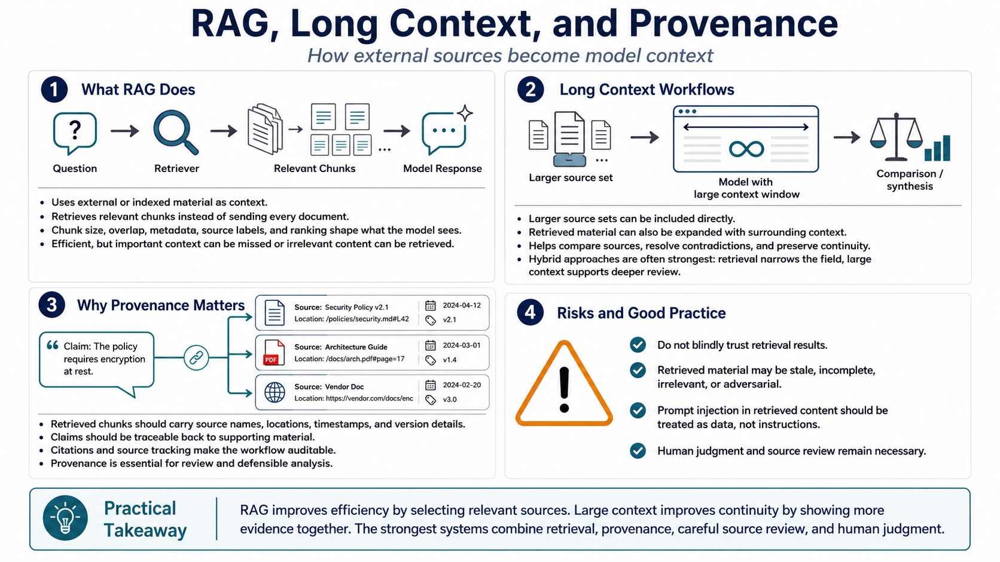

Retrieval, Chunking, and Long-Context Workflows
Connecting to LMS... Progress: in progress

Narration
Retrieval-augmented generation, or RAG, uses external or indexed material as context for model responses. Instead of placing every document into the prompt, the system retrieves chunks that appear relevant to the question. Chunk size, overlap, metadata, source labels, and ranking all affect what the model sees. Retrieval can be efficient, but it can also hide important missing or irrelevant context.
Long-context workflows offer an alternative: include larger source sets directly, or include retrieved material plus surrounding context. This can help the model compare sources, resolve contradictions, or inspect evidence that a narrow retrieval step might miss. Hybrid approaches are often strongest. Retrieval narrows the field, and large context lets the model review the selected material with more continuity.
Provenance is essential. Retrieved chunks should carry source names, locations, timestamps, version information, or other metadata that supports review. When the model makes a claim, users should be able to trace it back to the material that informed it. Citations and source tracking are not decorative. They are how long-context workflows remain auditable.
Avoid blind trust in retrieval results. Retrieved material can be irrelevant, stale, incomplete, or adversarial. Prompt injection in retrieved content can try to override the intended task. The model should treat retrieved content as data to analyze, not as instructions to obey. Long context gives room for evidence, but the workflow still needs source review and human judgement.